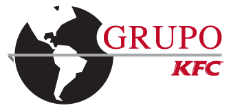

MediLyft acompaña y potencia el cuidado de salud de tu empresa, y se adapta a las necesidades estratégicas de la organización.
En empresas con alta rotación y operación intensiva como restaurantes, la salud del empleado impacta directamente en productividad, calidad de servicio y costos operativos.
El sector de alimentos y servicios concentra uno de los mayores índices de ausentismo en Latinoamérica — la mayoría por condiciones tratables oportunamente.
La mayoría de los empleados espera días antes de consultar — convirtiendo casos simples en bajas prolongadas y mayor costo para la empresa.
Una atención de urgencia cuesta significativamente más que una videoconsulta preventiva realizada a tiempo desde WhatsApp.
WhatsApp está activo en prácticamente todo tu equipo. MediLyft activa atención médica real sobre el canal que ya usan todos los días.
El empleado reporta sus síntomas por WhatsApp durante o antes de su turno. MediLyft evalúa clínicamente, clasifica la urgencia y coordina la atención: videoconsulta inmediata, orientación telefónica o derivación. Sin ausentismo innecesario.
El médico recibe el historial completo antes de conectar — sin repetir antecedentes
El empleado conecta con un médico desde WhatsApp — sin desplazamiento, sin perder el turno, sin costo adicional por urgencia. El médico recibe el perfil clínico completo antes de iniciar la consulta.
Cada interacción enriquece el expediente del empleado: alergias, condiciones crónicas, medicación activa y antecedentes relevantes. El médico accede al historial completo en segundos — sin formularios, sin papeles.
MediLyft recuerda al empleado su medicación diaria, registra cada confirmación y alerta al médico cuando hay falta de adherencia. Las notificaciones son individuales y privadas — las métricas de adherencia se presentan de forma agregada para proteger al empleado.
| Empleado | Condición | Medicación | Adherencia | Estado |
|---|---|---|---|---|
| María G. | Amigdalitis | Amoxicilina 500mg | ✓ 3/3 hoy | Al día |
| Roberto V. | HTA | Enalapril 10mg | ⚠ 18/30 | Alerta activa |
| Lucía M. | Diabetes T2 | Metformina 850mg | ✓ 27/30 | Al día |
| Pedro S. | Asma | Salbutamol inh. | ✗ 8/30 | ⚠ Crítica |
MediLyft consolida adherencia, controles realizados, videoconsultas y condiciones crónicas en un indicador mensual por empleado. El departamento de salud ocupacional obtiene una vista agregada por área, turno o restaurante.
El departamento de salud ocupacional obtiene visibilidad total sobre el bienestar del equipo: seguimiento de casos, adherencia, pruebas psicosociales y tendencias — exportable y listo para el comité de gestión.
MediLyft es una herramienta que complementa e impulsa la prevención y proactividad en salud de tu equipo.
Beneficios concretos y medibles para la empresa, el departamento de salud ocupacional y cada empleado del equipo.
La orientación inmediata y la videoconsulta resuelven la mayoría de casos sin que el empleado deba ausentarse — más continuidad operativa para Grupo KFC.
Ventaja competitiva para Grupo KFC y beneficio de alto impacto para el equipo: atención médica real en minutos por WhatsApp, sin salir del turno.
Seguimiento de casos, adherencia y bienestar por área — exportable y listo para el departamento de salud ocupacional y el comité de gestión.
Promedio de bienestar, seguimiento de casos, tasa de adherencia y prueba psicosocial: visibilidad proactiva de los indicadores que más importan.